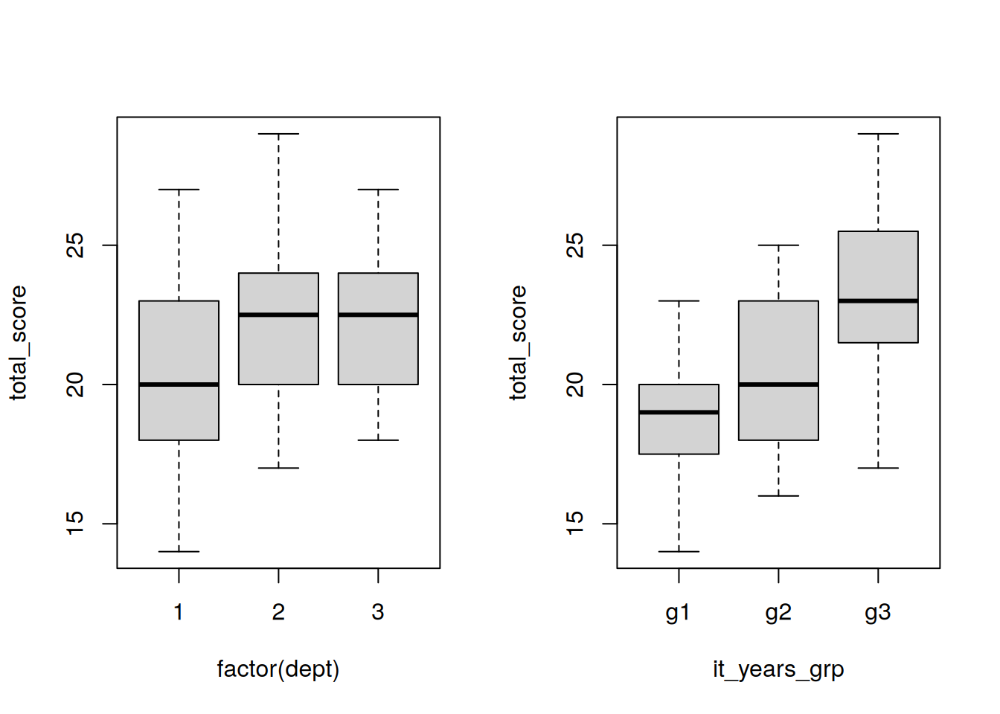
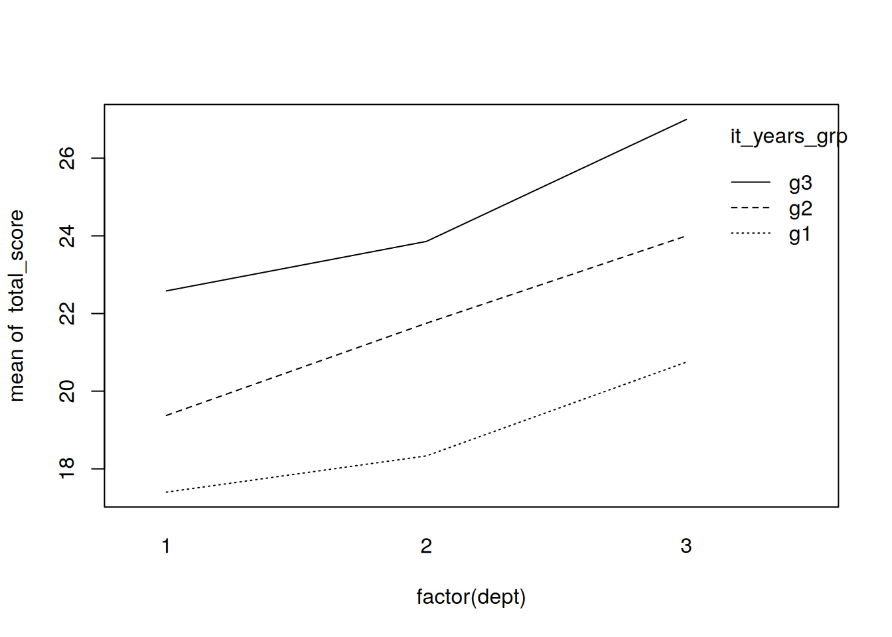
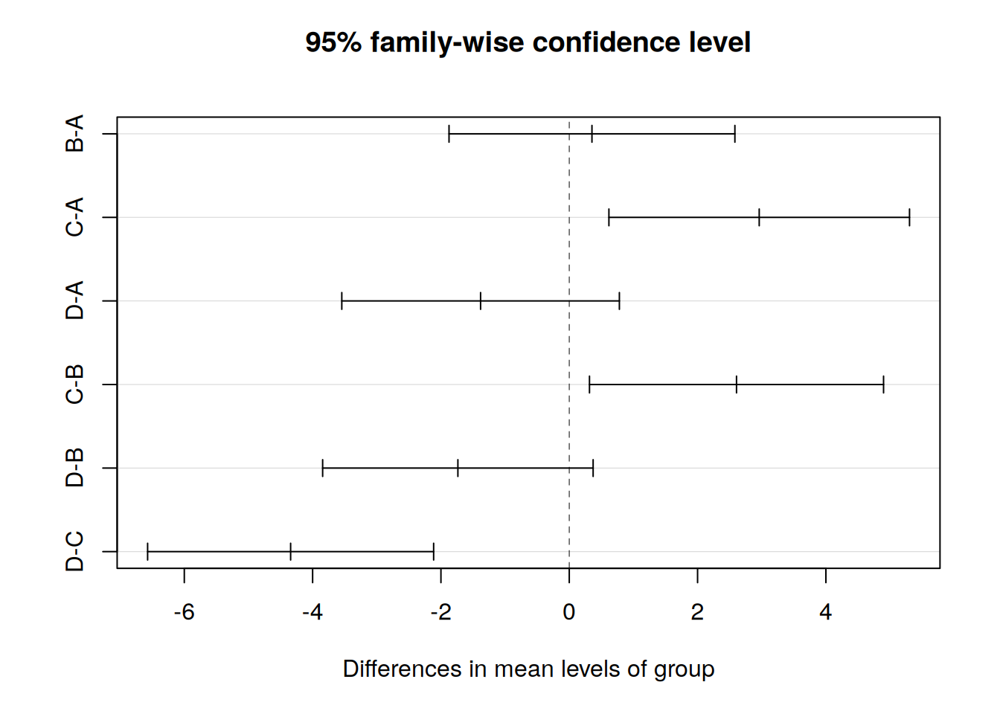
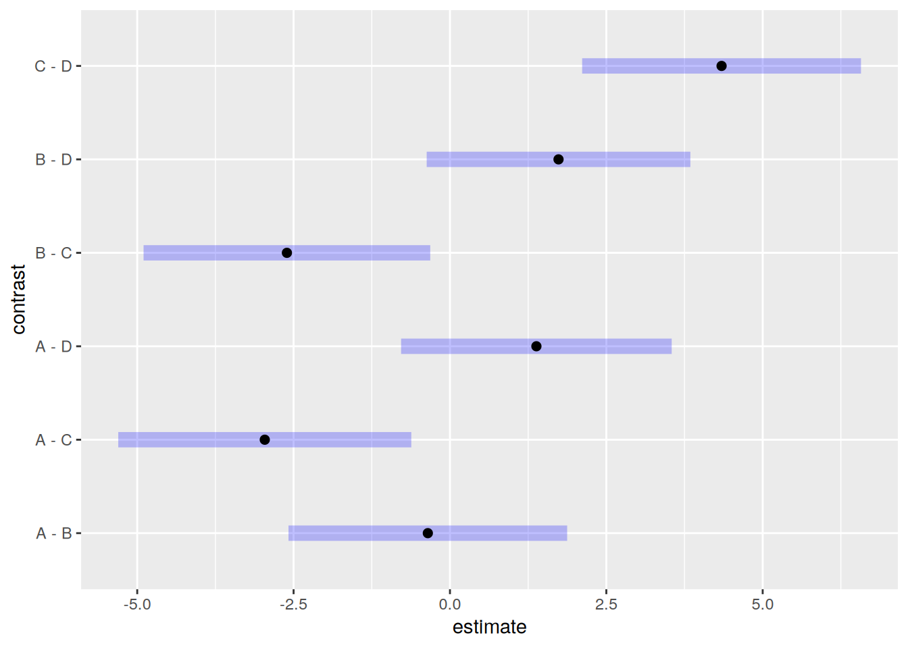
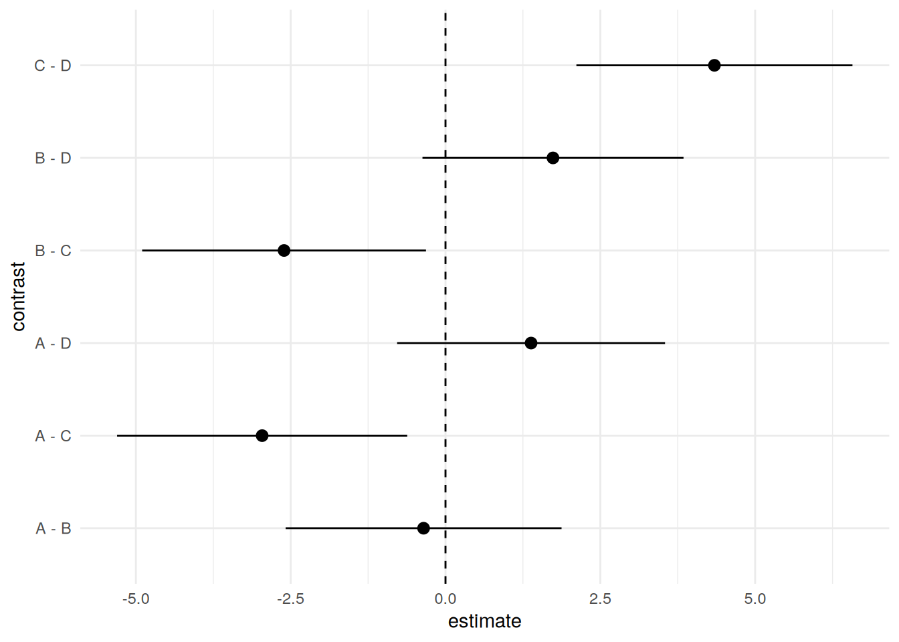

4 分散分析 (ANOVA)
授業では, 多群における平均値の差の検定の方法として, (1元配置) 分散分析 (ANOVA) を紹介した.
\(k\)個の群 (グループ) があり, それぞれの真の平均値が \(\mu_1,\mu_2,...,\mu_k\)であるとする.
ANOVA帰無仮説 (\(H_0\)): 全群の平均値が等しい (\(\mu_1=\mu_2=...=\mu_k\))
対立仮説 (\(H_1\)): 平均値の異なる群が少なくとも一つある (\(\mu_i \neq \mu_j, i \neq j\))
t検定が2群間の比較に特化した手法であるのに対し, ANOVAは3群以上の比較に 一般化した手法である. なお, 2群のみの場合にANOVAを適用すると, t検定 (等分散を仮定する場合) と全く同じp値が得られる (本章の分析例データ1で確認する).
4.1 1元配置ANOVA
ANOVAの実行には, 1元配置ANOVAに特化したR関数であるoneway.anova()の他,
より一般のANOVAに適用できるaov(), anova()が利用できる.
以下では, 仮想データセット (3群, \(k=3\)) について,
aov()を使用した実行例を示す.
# コード出所: ChatGPT-4の出力をもとに編集 仮想データセットの作成 (数値例1)
# グループ数: k=3
k <- 3
ttt1 <- c(8, 7, 9, 6, 8)
ttt2 <- c(7, 5, 4)
ttt3 <- c(6, 2, 1, 3)
# '縦型形式'データセットの作成
dat1 <- data.frame(grp = c(rep("ttt1", length(ttt1)), rep("ttt2", length(ttt2)),
rep("ttt3", length(ttt3))), resp = c(ttt1, ttt2, ttt3))
# ANOVAの実行
res_aov <- aov(resp ~ grp, data = dat1)
# 実行結果の表示
summary(res_aov)
#> Df Sum Sq Mean Sq F value Pr(>F)
#> grp 2 47.13 23.567 8.887 0.0074 **
#> Residuals 9 23.87 2.652
#> ---
#> Signif. codes: 0 '***' 0.001 '**' 0.01 '*' 0.05 '.' 0.1 ' ' 1summary()の出力表のうち, Df(自由度), Sum Sq(平方和), Mean Sq(平均平方),
F value(F統計量), Pr(>F)(p値) が, ANOVAの検定結果を構成する主要な値である.
grpの行のp値が, 「全群の平均値が等しい」という帰無仮説に対するp値であり,
これが十分小さければ (通常5%未満であれば), 群間で平均値に差があると判断する.
(自主課題)
- 実行結果の解釈をしてみよう.
ANOVAの計算ロジックの確認*
つぎに, 1元配置ANOVAが実際に行っている計算をRコードで書いたものを紹介する. これは, ANOVAの理論の理解を深めることを目的にしたもので, ANOVAの実践には不要であり, 読み飛ばしても構わない.
# 確認用 (飛ばしてOK)
library(tidyverse)
# 全体平方和 (SST) の計算
avg <- mean(dat1$resp) # 全体平均
# (mean(dat1$resp^2) - avg^2) * length(dat1$resp)
sst <- sum((dat1$resp - avg)^2) # 全体平方和
# 群内平方和 (SSW) の計算 (※) 発展的なコード library(tidyverse)
ssw_j <- dat1 %>%
group_by(grp) %>%
summarize(ssq = (mean(resp^2) - mean(resp)^2) * length(resp))
ssw <- sum(ssw_j$ssq) # 群内平方和
# 群間平方和 (SSB) の計算
n_vec <- c(length(ttt1), length(ttt2), length(ttt3))
avg_j <- dat1 %>%
group_by(grp) %>%
summarize(avg = mean(resp))
ssb <- sum((avg_j$avg - avg)^2 * n_vec) # 群間平方和
# または,
ssb <- sst - ssw # 群間平方和
# 自由度 (df) SST: length(dat1$resp) - 1, SSB: K - 1, SSW: length(dat1$resp) -
# K
# 平均平方和の計算
msb <- ssb/(k - 1)
msw <- ssw/(length(dat1$resp) - k)
# F値の計算
f_val <- msb/msw
# p値の計算
pf(f_val, k - 1, length(dat1$resp) - k, lower.tail = F)
#> [1] 0.007402874この手計算によるf_valとp値が, aov()の出力のF value, Pr(>F)と
一致することを確認してみよう. ANOVAのF値とは, 「群間のばらつき (平均平方)」を
「群内のばらつき (平均平方)」で割ったものであり, 群間のばらつきが群内のばらつき
よりも相対的に大きいほど, F値は大きくなる (群間の差がはっきりしている
ことを意味する).
(自主課題)
- 関数
aov()の実行結果と見比べてみよう.
4.2 2元配置ANOVA
授業ではカバーしていないが, 2つの因子が反応変数に与える影響を 調べる2元配置ANOVAの実行コード例を紹介する.
ここでは, 別の仮想データセット (2群) を用意する.
# コード出所: ChatGPT-4の出力をもとに編集
# 仮想データセットの作成 (数値例2)
fctA_val <- c("a1", "a2", "a3", "a4")
fctB_val <- c("b1", "b2", "b3")
val <- matrix(c(8, 7, 6, 7, 5, 2, 6, 4, 3, 8, 6, 2), nrow = 4, byrow = T)
colnames(val) <- fctB_val
rownames(val) <- fctA_val
# '縦型形式'データセットに変形
dat2 <- as.data.frame(val) %>%
rownames_to_column(var = "fctA") %>%
pivot_longer(cols = b1:b3, names_to = "fctB", values_to = "resp") %>%
data.frame()
# SST sum((val - mean(val))^2)
# ANOVAの実行
res_aov <- aov(resp ~ fctA + fctB, data = dat2)
# 実行結果の表示
summary(res_aov)
#> Df Sum Sq Mean Sq F value Pr(>F)
#> fctA 3 12.67 4.222 4.343 0.05988 .
#> fctB 2 32.17 16.083 16.543 0.00362 **
#> Residuals 6 5.83 0.972
#> ---
#> Signif. codes: 0 '***' 0.001 '**' 0.01 '*' 0.05 '.' 0.1 ' ' 1
# interactionなし res_aov <- aov(resp ~ fctA * fctB, data = dat2)
# summary(res_aov)2元配置ANOVAでは, 2つの因子 (fctA, fctB) それぞれの主効果を, 1つのモデル
(resp ~ fctA + fctB) の中で同時に検定できる. ここでは, 因子間の交互作用
(後述) を考えない加法モデルを用いている.
(自主課題)
- 実行結果の解釈をしてみよう.
4.3 分析例
ここからは, 実際のビジネス系データを用いて, ANOVAを適用する例を3つ紹介する.
データ1: 口コミサイトの企業評価 (仮想データ)
t検定と結果の比較を行う.
口コミサイト(仮想データ)
2つの業種 (A: IT・コンサル, B: 小売・サービス), 各20社
各企業に対する(元)従業員による平均評価点(1--5)データの読み込み, 並べ替え
x <- read.csv("web/dat_1-1.csv")
head(x)
#> A B
#> 1 2.5 2.6
#> 2 3.4 4.1
#> 3 3.8 3.8
#> 4 3.3 3.7
#> 5 4.4 3.7
#> 6 3.3 3.7
# xの整形 (横型 → 縦型)
xvec <- as.vector(as.matrix(x)) # xをベクトル化
yvec <- c(rep("A", 20), rep("B", 20))
xdf <- data.frame(score = xvec, type = yvec)
str(xdf)
#> 'data.frame': 40 obs. of 2 variables:
#> $ score: num 2.5 3.4 3.8 3.3 4.4 3.3 3.5 4.9 3.8 4.2 ...
#> $ type : chr "A" "A" "A" "A" ...
xdf$score
#> [1] 2.5 3.4 3.8 3.3 4.4 3.3 3.5 4.9 3.8 4.2 3.9 4.1 3.3 3.7 3.4 3.5 4.1 4.5 3.9
#> [20] 5.0 2.6 4.1 3.8 3.7 3.7 3.7 2.2 4.4 3.0 2.4 3.3 4.0 3.8 3.6 3.1 4.3 3.0 3.3
#> [39] 4.5 3.7
xdf[, "score"]
#> [1] 2.5 3.4 3.8 3.3 4.4 3.3 3.5 4.9 3.8 4.2 3.9 4.1 3.3 3.7 3.4 3.5 4.1 4.5 3.9
#> [20] 5.0 2.6 4.1 3.8 3.7 3.7 3.7 2.2 4.4 3.0 2.4 3.3 4.0 3.8 3.6 3.1 4.3 3.0 3.3
#> [39] 4.5 3.7
xdf[, 1]
#> [1] 2.5 3.4 3.8 3.3 4.4 3.3 3.5 4.9 3.8 4.2 3.9 4.1 3.3 3.7 3.4 3.5 4.1 4.5 3.9
#> [20] 5.0 2.6 4.1 3.8 3.7 3.7 3.7 2.2 4.4 3.0 2.4 3.3 4.0 3.8 3.6 3.1 4.3 3.0 3.3
#> [39] 4.5 3.7
# 代替的方法 stack(x)
## library(tidyverse) gather関数(横型→縦型), spread関数(縦型→横型)1元ANOVAの実行 (以下は自分で手を動かして確認してみよう)
# 1元ANOVA
attach(xdf)
res_aov <- aov(score ~ type)
summary(res_aov)
### 代替アプローチ (1)
oneway.test(score ~ type)
# デフォルト：等分散を仮定しない
oneway.test(score ~ type, var.equal = T)
# 等分散を仮定
### 代替アプローチ (2)
res_lm <- lm(score ~ type)
res_anova <- anova(res_lm)
res_anova # summary()を使わずに出力
detach(xdf)
# 等分散検定
var.test(x$A, x$B)
boxplot(x)
# t検定との比較
t.test(x$A, x$B)
t.test(x$A, x$B, var.equal = T)
## t.test(x$A, x$B, paired=T)上のコードを実行すると, aov(score ~ type)によるANOVAのp値と,
t.test(x$A, x$B, var.equal = T)(等分散を仮定したt検定) のp値が完全に
一致することが確認できる (いずれもp値\(\approx0.117\)). これは, 2群の比較に
限っては, 等分散を仮定したANOVAとt検定は数学的に等価であることを示している.
一方, 業種A・B間の評価点に有意な差があるとまでは言えない結果になっている.
データ2: 社内DX研修データ
第1回・第2回のR演習, および前章でも用いたdx_training_assessment.csv
(社内DX研修の理解度テスト結果, 受講者45名) を, ここでは部署 (dept:
1営業/2技術/3企画) とIT経験年数グループ (it_years_grp) という2つの因子の
観点から, ANOVAで分析してみる.
dx_df <- read.csv("class/dx_training_assessment.csv", header = TRUE)
total_score <- apply(dx_df[, c("score_basic", "score_inter", "score_adv")], 1, sum)
dx_df2 <- cbind(dx_df, total_score)
attach(dx_df2)
it_years_grp <- cut(it_years, breaks = c(-1, 2, 5, 100), labels = c("g1", "g2", "g3"),
right = T)
# 分割表(クロス集計表)
table(it_years_grp, factor(dept))
#>
#> it_years_grp 1 2 3
#> g1 5 3 4
#> g2 8 4 1
#> g3 12 7 1
# 箱ひげ図
par(mfrow = c(1, 2))
boxplot(total_score ~ factor(dept)) # 3-level factor
boxplot(total_score ~ it_years_grp) # 3-level factor
1元ANOVA
# 1-way ANOVA (部署のみ)
summary(aov(total_score ~ factor(dept)))
#> Df Sum Sq Mean Sq F value Pr(>F)
#> factor(dept) 2 29.8 14.90 1.261 0.294
#> Residuals 42 496.5 11.82
# 代替的アプローチ
anova(lm(total_score ~ factor(dept)))
#> Analysis of Variance Table
#>
#> Response: total_score
#> Df Sum Sq Mean Sq F value Pr(>F)
#> factor(dept) 2 29.81 14.905 1.2608 0.2939
#> Residuals 42 496.50 11.822部署 (dept) だけでグループ分けすると, p値\(=0.294\)と, 5%水準で有意な差は
見られない. 前章で見たように, IT経験年数 (it_years_grp) で分けた場合には
明確な差 (p値\(=0.0004\)程度) が見られていたことと対照的である. このことは,
「総合得点のばらつきの主な要因はIT経験年数であり, 部署単体では説明力が弱い」
ことを示唆する. そこで, 次に両方の因子を同時に投入した2元ANOVAを試してみる.
2元ANOVA
2因子の場合には, 1因子の場合と異なり, 因子間に交互作用 (相互作用) が存在する場合がある.
関数interaction.plotにより交互作用プロットを作図することで,
存在の有無を目で確認することができる.
関数aov()を使用した実行例:

summary(aov(total_score ~ it_years_grp + factor(dept))) # 主効果項のみ (交互作用項なし)
#> Df Sum Sq Mean Sq F value Pr(>F)
#> it_years_grp 2 163.08 81.54 11.220 0.000135 ***
#> factor(dept) 2 72.54 36.27 4.991 0.011616 *
#> Residuals 40 290.69 7.27
#> ---
#> Signif. codes: 0 '***' 0.001 '**' 0.01 '*' 0.05 '.' 0.1 ' ' 1
summary(aov(total_score ~ it_years_grp * factor(dept))) # 交互作用項有
#> Df Sum Sq Mean Sq F value Pr(>F)
#> it_years_grp 2 163.08 81.54 10.227 0.000304 ***
#> factor(dept) 2 72.54 36.27 4.549 0.017321 *
#> it_years_grp:factor(dept) 4 3.68 0.92 0.115 0.976261
#> Residuals 36 287.02 7.97
#> ---
#> Signif. codes: 0 '***' 0.001 '**' 0.01 '*' 0.05 '.' 0.1 ' ' 1代替的に, 関数anova()を使用した実行例:
# 代替的アプローチ
anova(lm(total_score ~ it_years_grp + factor(dept))) # 主効果項のみ (交互作用項なし)
#> Analysis of Variance Table
#>
#> Response: total_score
#> Df Sum Sq Mean Sq F value Pr(>F)
#> it_years_grp 2 163.080 81.540 11.2201 0.0001355 ***
#> factor(dept) 2 72.537 36.268 4.9906 0.0116163 *
#> Residuals 40 290.694 7.267
#> ---
#> Signif. codes: 0 '***' 0.001 '**' 0.01 '*' 0.05 '.' 0.1 ' ' 1
anova(lm(total_score ~ factor(dept) + it_years_grp)) # 分解順の影響
#> Analysis of Variance Table
#>
#> Response: total_score
#> Df Sum Sq Mean Sq F value Pr(>F)
#> factor(dept) 2 29.809 14.905 2.0509 0.1419
#> it_years_grp 2 205.808 102.904 14.1598 2.24e-05 ***
#> Residuals 40 290.694 7.267
#> ---
#> Signif. codes: 0 '***' 0.001 '**' 0.01 '*' 0.05 '.' 0.1 ' ' 1
anova(lm(total_score ~ it_years_grp * factor(dept))) # 交互作用項有
#> Analysis of Variance Table
#>
#> Response: total_score
#> Df Sum Sq Mean Sq F value Pr(>F)
#> it_years_grp 2 163.080 81.540 10.2275 0.000304 ***
#> factor(dept) 2 72.537 36.268 4.5491 0.017321 *
#> it_years_grp:factor(dept) 4 3.679 0.920 0.1153 0.976261
#> Residuals 36 287.015 7.973
#> ---
#> Signif. codes: 0 '***' 0.001 '**' 0.01 '*' 0.05 '.' 0.1 ' ' 1
lm(total_score ~ it_years_grp + factor(dept))
#>
#> Call:
#> lm(formula = total_score ~ it_years_grp + factor(dept))
#>
#> Coefficients:
#> (Intercept) it_years_grpg2 it_years_grpg3 factor(dept)2 factor(dept)3
#> 17.058 2.630 5.459 1.532 3.927
detach(dx_df2)加法モデル (it_years_grp + factor(dept)) では, IT経験年数 (p値\(=0.0001\)程度)
と部署 (p値\(=0.012\)程度) の両方の主効果が5%水準で有意になっている. すなわち,
部署を要因として明示的にモデルに含めることで (部署間のばらつきをコントロール
することで), 1元ANOVAでは見えなかった部署の効果も検出できるようになっている.
一方, 交互作用項 (it_years_grp:factor(dept)) のp値は\(0.976\)と非常に大きく,
「IT経験年数の効果は, どの部署でもほぼ同じように表れている」(交互作用がない)
と判断できる. なお, anova(lm())では, 投入する因子の順序を変えると
(anova(lm(total_score ~ factor(dept) + it_years_grp))), 各項の平方和の
分解の仕方が変わる点に注意したい (加法モデルの場合, 主効果のp値自体は
大きくは変わらないが, 一般には順序依存性がある).
(自主課題)
実行結果の解釈をしてみよう.
“対応のある分散分析”を実行してみよう. (ヒント: 山田・杉澤・村井 (2008)『Rによるやさしい統計学』「第7章 分散分析」を参照せよ.)
データ3: 経営科学アンケート
KBS専門科目「ビジネス統計」履修者に対して行った, MBA基礎科目「経営科学」に対するフィードバックの回答と, 各受験者のデモグラフィック情報から成るデータセットである.
グループ(group), 負荷(workload), 難易度(difficulty), 有用性(usefulness), 貢献度(contribution), 数学スキル(Math), エクセルスキル(Excel), 文理(AS), 業務経験(Work), 性別(MF)testdat <- read.csv("web/FB_dist.csv", header = T)
attach(testdat)
# 実行1: Mathを数値(連続量)として扱う → 単純回帰と同じ
aov(difficulty ~ Math)
#> Call:
#> aov(formula = difficulty ~ Math)
#>
#> Terms:
#> Math Residuals
#> Sum of Squares 20.02254 52.62250
#> Deg. of Freedom 1 113
#>
#> Residual standard error: 0.6824118
#> Estimated effects may be unbalanced
# anova(lm(difficulty ~ Math))
# 実行2: Mathをfactor(カテゴリー)として扱う → ANOVA
aov(difficulty ~ factor(Math))
#> Call:
#> aov(formula = difficulty ~ factor(Math))
#>
#> Terms:
#> factor(Math) Residuals
#> Sum of Squares 21.81657 50.82847
#> Deg. of Freedom 4 110
#>
#> Residual standard error: 0.6797624
#> Estimated effects may be unbalanced
summary(aov(difficulty ~ factor(Math)))
#> Df Sum Sq Mean Sq F value Pr(>F)
#> factor(Math) 4 21.82 5.454 11.8 5.16e-08 ***
#> Residuals 110 50.83 0.462
#> ---
#> Signif. codes: 0 '***' 0.001 '**' 0.01 '*' 0.05 '.' 0.1 ' ' 1
# anova(lm(difficulty ~ factor(Math)))
detach(testdat)ここで注目したいのは, Math(数学スキルの自己評価, 1〜5の順序尺度) を
数値のまま与えるか, factor()でカテゴリー変数として与えるかで,
結果の意味が変わる点である. aov(difficulty ~ Math)は, 実質的に
「Mathを説明変数とする単純線形回帰」(自由度1) として扱われるのに対し,
aov(difficulty ~ factor(Math))は, Mathの5つの値をそれぞれ独立したグループ
とみなした, 自由度4の通常のANOVAになる. summary(aov(difficulty ~ factor(Math)))の結果 (p値\(<0.0001\)) から, 数学スキルのレベルによって,
「経営科学」の難易度の感じ方には, 統計的に非常に明確な差があることがわかる.
(自主課題)
実行結果の解釈をしてみよう.
aov(difficulty ~ Math)とaov(difficulty ~ factor(Math))で, 自由度 (Degrees of Freedom) がどう違うか確認し, その意味を説明してみよう.“対応のある分散分析”を実行してみよう. (ヒント: 山田・杉澤・村井 (2008)『Rによるやさしい統計学』「第7章 分散分析」を参照せよ.)
4.4 分散分析と平均値の多重比較*
授業では, 多群における平均値の差の検定の方法として, (1元配置) 分散分析 (ANOVA) を紹介した. 2群のt検定を繰り返し実行する方法については問題が生じ得る.
すなわち, (独立な) 検定を繰り返し実行すると実質的な有意水準が低下し, 帰無仮説を想定より棄却しやすくなる現象”多重検定問題”について 言及した.
なお, 分散分析の結果を踏まえて追加分析を行うこともある. 3群以上を比較したい場合に, 分散分析（ANOVA）を実施し, 全体差ありと判定された後に多重比較法 (ペア比較) を実施することをPost-hoc test (事後検定)と呼ぶ.
-多重比較法 (MCP):
- 複数の仮説 (平均値の差など) を同時に検定する際に, 全体の誤り率 (FWERやFDRなど) を制御するための統計的方法の総称ここでは, ANOVAによって, 群間に平均値の差ありと判断された後に実践される方法として, Tukeyによる HSD（Honestly Significant Difference）検定について紹介する.
これは 一元配置ANOVAの全ペアに対して, 平均の差について同時に検定・同時信頼区間を与える多重比較法である (有意水準の補正を内包).
FWER (family-wise error rate, ファミリー内誤差率）を α にコントロール する. (すなわち, 別途 Bonferroni 等の補正は不要)
HSD検定は, 群サイズが異なるにも適用可能であり, Tukey–Kramer法とも呼ばれる.
- FWER: ある多重検定の集合（family）に含まれる仮説群のうち, 少なくとも一つでも誤って棄却する確率: \(FWER=\)P(少なくとも1つの誤検出)
- 前提：独立性・正規性・等分散性.
- 等分散でない場合 (Games–Howell), 正規性の仮定なし (ノンパラメトリック) の場合 (Steel-Dwass)
以下の出所: ChatGPT (GPT-5) の出力を一部加工
Rによる事後分析の実行例
以下では, 4つの群 (A, B, C, D) を比較する仮想データを用いる. 群サイズは
不等 (20, 22, 18, 25) にしてあり, 不等サイズのケースでも多重比較法が
問題なく適用できることを確認できるようにしている. ビジネスの場面であれば,
例えば「4種類の広告クリエイティブ (A/B/C/D) によるクリック率・反応スコアの
比較」や「4つの研修プログラムの効果測定」のような状況を想定すると
イメージしやすいだろう (ここではデータの一般性を保つため, 変数名自体は
抽象的なgroup, yのままにしている).
1) 基本：ANOVA → TukeyHSD
set.seed(1)
dat <- data.frame(
group = rep(LETTERS[1:4], times = c(20, 22, 18, 25)), # サイズ不等でも可
y = c(rnorm(20, 0, 3),
rnorm(22, 1, 3),
rnorm(18, 3, 3),
rnorm(25, -1, 3))
)
# 一元配置 ANOVA
fit <- aov(y ~ group, data = dat)
summary(fit)
#> Df Sum Sq Mean Sq F value Pr(>F)
#> group 3 200 66.67 8.824 3.96e-05 ***
#> Residuals 81 612 7.56
#> ---
#> Signif. codes: 0 '***' 0.001 '**' 0.01 '*' 0.05 '.' 0.1 ' ' 1
# Tukey（R base の同時比較：不等サイズなら内部で Tukey–Kramer）
tk <- TukeyHSD(fit) # 同時CIと同時p値（FWER制御）
print(tk)
#> Tukey multiple comparisons of means
#> 95% family-wise confidence level
#>
#> Fit: aov(formula = y ~ group, data = dat)
#>
#> $group
#> diff lwr upr p adj
#> B-A 0.3537944 -1.8739998 2.5815887 0.9754905
#> C-A 2.9607318 0.6180284 5.3034353 0.0073568
#> D-A -1.3820488 -3.5452555 0.7811580 0.3430124
#> C-B 2.6069374 0.3152300 4.8986448 0.0192974
#> D-B -1.7358432 -3.8437158 0.3720294 0.1432848
#> D-C -4.3427806 -6.5717533 -2.1138079 0.0000124まず1元配置ANOVA自体の結果 (F値\(=8.82\), p値\(=3.96\times10^{-5}\)) から,
4群の平均値は全体として等しいとは言えない (少なくとも1組の群間に差がある)
ことがわかる. TukeyHSD()の出力は, 可能な全ペア (\(4\times3/2=6\)通り) について,
平均差の推定値 (diff), 95%同時信頼区間 (lwr, upr), FWER補正済みのp値
(p adj) を一度に与える. この例では, C-A (p値\(=0.0074\)), C-B (p値\(=0.0193\)),
D-C (p値\(<0.0001\)) の3組が5%水準で有意であり, 群Cが他の群 (特にA, D) と
明確に異なる (平均値が高い) ことがわかる. 一方, A-B, A-D, B-Dの3組については,
有意な差は認められない.

信頼区間がゼロ (破線) をまたいでいないペア (C-A, C-B, D-C) が, 有意な差のあるペアに対応している.
参考: ggplot2を用いた可視化の例
library(emmeans)
emm <- emmeans(fit, ~group)
pairs <- pairs(emm, adjust = "tukey")
plot(pairs) # latticeベースの図
# ggplot2 に変換
df <- as.data.frame(confint(pairs))
library(ggplot2)
ggplot(df, aes(contrast, estimate, ymin = lower.CL, ymax = upper.CL)) + geom_pointrange() +
geom_hline(yintercept = 0, linetype = 2) + coord_flip() + theme_minimal()
2) 推定周辺平均（EMM）経由の一般化（推奨）
# install.packages('emmeans')
library(emmeans)
emm <- emmeans(fit, ~group)
res <- pairs(emm, adjust = "tukey") # 同時p値（FWER制御）
conf <- confint(pairs(emm), adjust = "tukey") # 同時CI
res
#> contrast estimate SE df t.ratio p.value
#> A - B -0.354 0.849 81 -0.417 0.9755
#> A - C -2.961 0.893 81 -3.315 0.0074
#> A - D 1.382 0.825 81 1.676 0.3430
#> B - C -2.607 0.874 81 -2.984 0.0193
#> B - D 1.736 0.804 81 2.160 0.1433
#> C - D 4.343 0.850 81 5.111 <.0001
#>
#> P value adjustment: tukey method for comparing a family of 4 estimates
conf
#> contrast estimate SE df lower.CL upper.CL
#> A - B -0.354 0.849 81 -2.582 1.874
#> A - C -2.961 0.893 81 -5.303 -0.618
#> A - D 1.382 0.825 81 -0.781 3.545
#> B - C -2.607 0.874 81 -4.899 -0.315
#> B - D 1.736 0.804 81 -0.372 3.844
#> C - D 4.343 0.850 81 2.114 6.572
#>
#> Confidence level used: 0.95
#> Conf-level adjustment: tukey method for comparing a family of 4 estimatesemmeansパッケージを使った方法は, TukeyHSD()と数値的には (符号を除いて)
同じ結果を与えるが, 出力がより扱いやすい形式になっている利点がある.
emmeans()は共変量調整付きモデル (例：線形モデル、GLM、混合効果) でも同様に, 調整済み平均差の Tukey を適用でき, 実務で汎用的である.
3) 単純な「ペアごとの t 検定」を多重比較補正つきで一括実行
Tukey ではなく,「普通のペア t 検定＋p 値補正」をしたい場合:
# 等分散仮定の t 検定を全ペアで実施し、p値を同時に補正
ptt <- pairwise.t.test(dat$y, dat$group, p.adjust.method = "holm", pool.sd = TRUE)
ptt
#>
#> Pairwise comparisons using t tests with pooled SD
#>
#> data: dat$y and dat$group
#>
#> A B C
#> B 0.6781 - -
#> C 0.0069 0.0150 -
#> D 0.1952 0.1011 1.3e-05
#>
#> P value adjustment method: holm- p.adjust.method には “bonferroni”, “holm”, “BH”（FDR）など.
- こちらは 「t検定＋補正」 であり, Tukey そのものではない. (分布と臨界値が異なる). FWER を厳密に制御したい ANOVA 後の全対比較には, 通常 Tukey を選ぶ.
Holm補正を用いたペアt検定の結果 (A-C: p値\(=0.0069\), B-C: p値\(=0.0150\), C-D: p値\(=1.3\times10^{-5}\)が有意) は, 先のTukey HSDの結果とほぼ同じ組み合わせで 有意になっており, 本データに関しては, どちらの方法を使っても実質的な結論は 変わらないことがわかる. ただし, 方法ごとにp値の補正の仕方 (および前提とする 分布) が異なるため, 一般には数値は厳密には一致しない点に注意する.
4) 等分散が怪しいとき（参考：Games–Howell）
# install.packages('rstatix')
library(rstatix)
gh <- games_howell_test(dat, y ~ group) # Welch型 + 不等分散・不等サイズに強い
gh
#> # A tibble: 6 × 8
#> .y. group1 group2 estimate conf.low conf.high p.adj p.adj.signif
#> * <chr> <chr> <chr> <dbl> <dbl> <dbl> <dbl> <chr>
#> 1 y A B 0.354 -1.82 2.53 0.972 ns
#> 2 y A C 2.96 0.654 5.27 0.007 **
#> 3 y A D -1.38 -3.71 0.945 0.396 ns
#> 4 y B C 2.61 0.451 4.76 0.013 *
#> 5 y B D -1.74 -3.91 0.440 0.16 ns
#> 6 y C D -4.34 -6.65 -2.04 0.0000579 ****- 等分散仮定を置かない多重比較として実務で広く用いられる (FWER近似制御).
Games-Howell法でも, 有意になるペアの組み合わせ (A-C, B-C, C-Dが有意) は Tukey HSDとほぼ一致している. 実務では, 等分散性に確信が持てない場合には, 最初からGames-Howell法を用いる (事前に等分散性検定を行わない) という 進め方も一般的である (前章で紹介した, t検定におけるWelch検定優先の考え方と 同様の発想である).
(自主課題)
本章の4つの方法 (TukeyHSD, emmeansによるTukey, Holm補正ペアt検定, Games-Howell) で, 「有意」と判定されたペアの組み合わせを比較し, 一致している点・異なっている点を整理してみよう.
もし, 多重比較の補正を一切行わず, 6通りのペアすべてに対して単純に
t.test()を繰り返し実行した場合, 結果はどのように変わると予想されるか. 実際にRで確認してみよう.